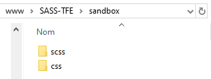
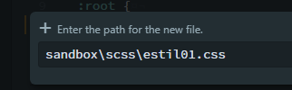
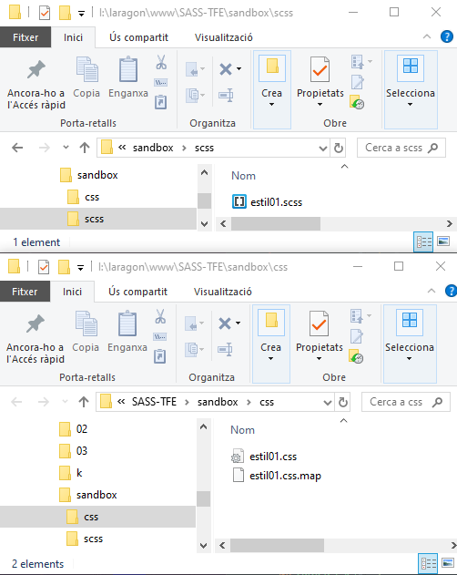
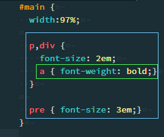

1. Crear carpetes de treball i carpetes de sortida
SASS és un llenguatge de pre-processament. Això significa que nosaltres no treballarem els fulls d'estil directament sobre arxius .CSS normals sino que treballarem en precursors d'aquests arxius, els quals trindran extensió .SCSS (i també poden tenir-ne .SASS). I a partir d'aquests, i de forma automàtica fins i tot, s'aniran generant els arxius .CSS. Per qüestions d'organització i que no es mesclin les coses crearem una carpeta pels arxius scss i una altra pels css normals.

A la carpeta scss crearem l'arxiu que anomenarem, per exemple estil01.css.

3. Preparar el "vigilant" de SASS.
Farem que el preprocessador sass vigili cada cop que guardem un canvi als arxius de la carpeta scss i en cas que sí els processi i escrigui els canvis a la carpeta de sortida css.
Per fer això amb la terminal anem a la carpeta que conté a les subcarpetes scss i css, que en el meu cas és la carpeta sandbox, com es pot observar a les imatges anteriors. Un cop allà hem de escriure la següent comanda.
$ sass --watch scss:css
En fer això podem veure que a la carpeta css ens ha creat dos arxius:
- estil01.css
- estil01.css.map

Si tot ha anat bé ja tenim preparada la infraestructura per poder treballar amb SASS.
Abans de continuar anem a comprovar que processa bé el llenguatge SASS. Escriurem a SASS uns estils anidats, a veure que succeeix.
A l'arxiu estil01.scss escriurem un codi amb successius anidaments, cosa típica de SASS i que no es pot fer a CSS.

Comparem a continuació els dos arxius:
estil01.scss
//CODI SCSS
#main {
width:97%;
p,div {
font-size: 2em;
a { font-weight: bold;}
}
pre { font-size: 3em;}
}
estil01.css
//CODI CSS
#main {
width: 97%;
}
#main p, #main div {
font-size: 2em;
}
#main p a, #main div a {
font-weight: bold;
}
#main pre {
font-size: 3em;
}
5. Opcions de sortida: expanded i compressed.
Existeix, actualment al preprocessador de SASS, dues formes d'escriure l'arxiu de sortida segons posem al terminal el següent:
COMPRESSED
$ sass --watch scss:css --style=compressed
Arxiu estil01.css en mode compressed:
#main{width:50%}#main p,#main div{font-size:2em}#main p a,#main div a{font-weight:bold}#main pre{font-size:3em}b{font-weight:bold}/*# sourceMappingURL=estil01.css.map */
EXPANDED
$ sass --watch scss:css --style=expanded
Arxiuestil01.css en mode expanded:
//CODI CSS
#main {
width: 97%;
}
#main p, #main div {
font-size: 2em;
}
#main p a, #main div a {
font-weight: bold;
}
#main pre {
font-size: 3em;
}